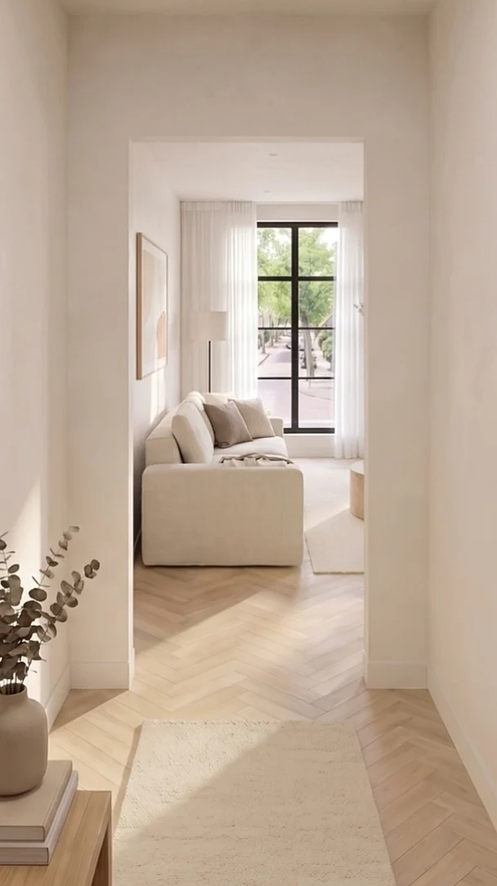
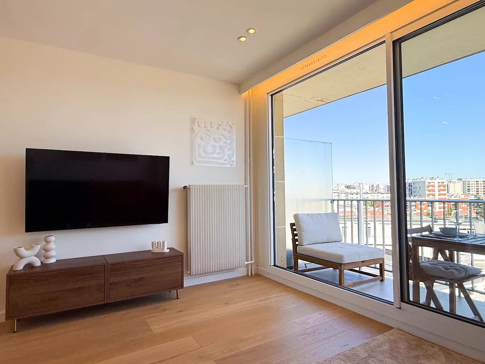
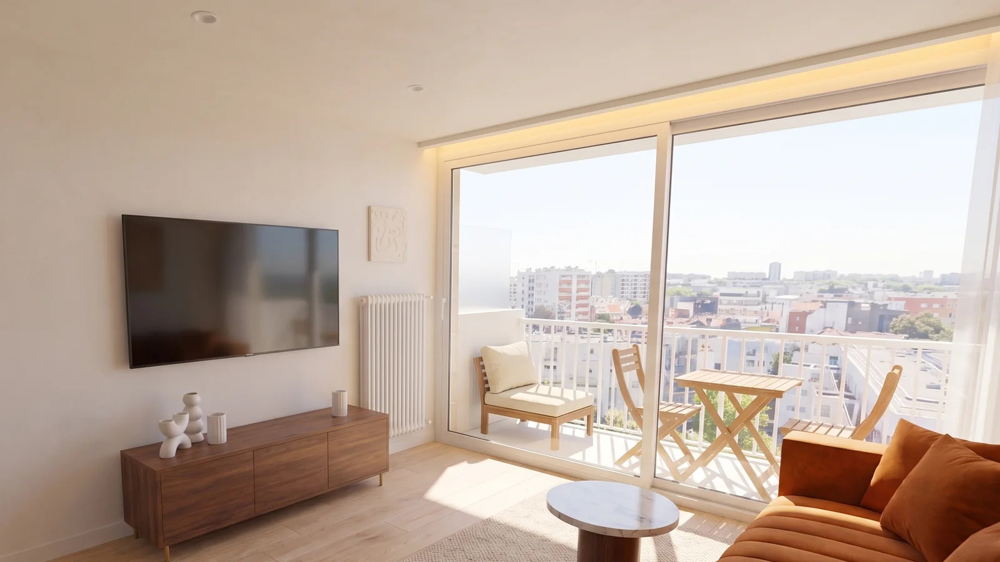
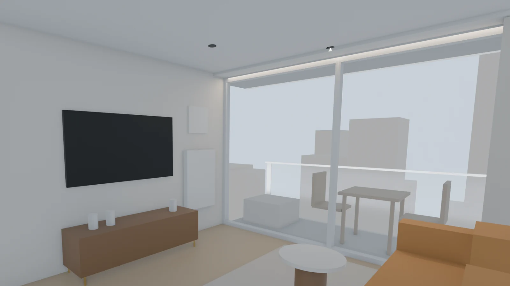
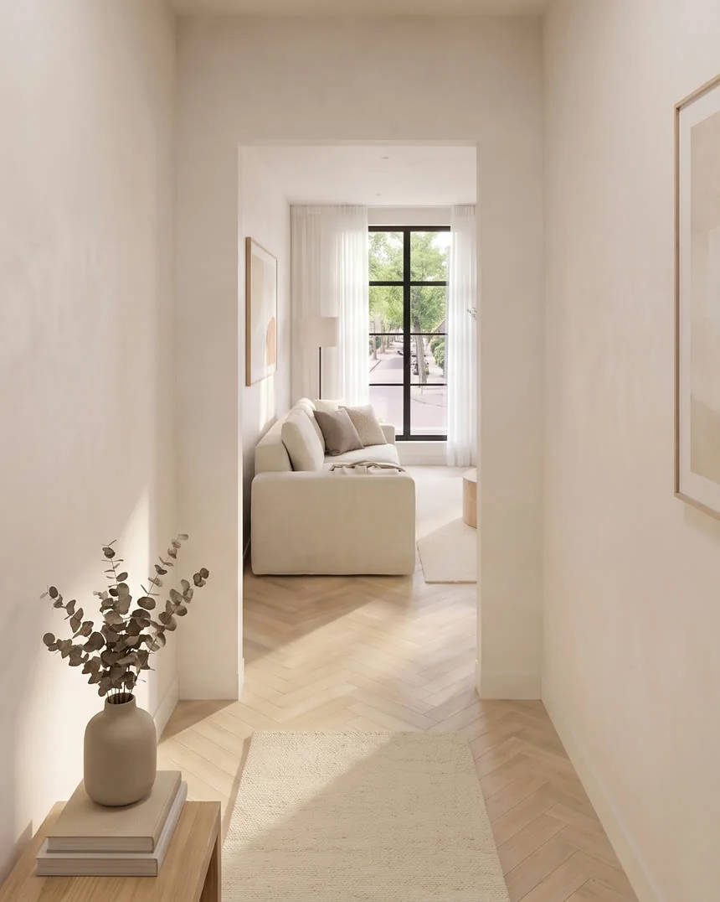

Interior films, made from photos
Walkthrough
Studio
A home, room by room. Made from the photos you already have.
01 / Hallway
The
hallway
No photographer. No visit. Just the photos you have.
02 / Living
The living
room
Every room rebuilt to scale, each piece where it stands.
03 / Kitchen
The
kitchen
Styled to sell. Materials taken from your own photos.
04 / Bedroom
The
bedroom
One slow, steady move per room. Landscape and portrait.
The film
One apartment,
20 seconds
This is the film you just walked through, the way it is delivered: landscape for your website and listing, portrait for your socials.
Process
From photo
to film
An apartment in Montreuil, Paris, made from the 13 photos in its listing. The same steps for every home, ending in one slow camera move per frame.

01 / Photo
An ordinary listing photo. For a project I ask for two per room, taken from opposite corners.


02 / Model
I rebuild the room to scale, every piece in its place, and set the cameras at eye level.
03 / Frame
AI turns the model into a photoreal frame, with the materials and furniture from the photos.
Pricing
€149
Per home, for the first five clients. €249 after that. You see the film first, with a watermark, and only pay once you approve it. Paid by invoice.
Included
- The film in landscape (16:9) and portrait (9:16)
- Ready within 48 hours
- One round of revisions
What I need from you
- Two photos per room, from opposite corners
- The ceiling height
- Two wall lengths per room, or a floor plan
No measurements at hand? I estimate them from the photos and tell you up front.
Also possible
A home shown in a new situation: refurnished, restyled or after a renovation. Price on request.
Contact
Let's walk
through your
home
Send me a link to your listing or a few photos, and I'll make one as an example.
Bram, Walkthrough Studio
